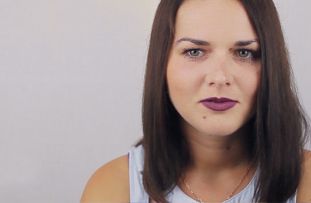

-
 Тренинг научил меня понимать себя и людей, ушла зажатость, появилась уверенность в себе
Тренинг научил меня понимать себя и людей, ушла зажатость, появилась уверенность в себе
Постепенно ушла зажатость. Я стала себя проявлять, и как итог, со временем, появилось то, о чем я и не смела мечтать… Уверенность в себе!!!
Татьяна Караказоваврач-невролог, кинезиолог, остеопат Читать -
.jpg) Я была изгоем. Я поняла, почему люди издевались надо мной
Я была изгоем. Я поняла, почему люди издевались надо мной
Люди считали меня странной и игнорировали. В школе надо мной сильно издевались. Я сидела на задней парте одна, приходила домой и плакала. С мамой не было эмоциональной связи, а мне хотелось от нее ласки и внимания.
Диана Галимбековастудентка МГУ Смотреть видео -
Победа над одиночеством
Избавление от страха перед людьми, которого я не могла добиться в течение многих лет «тренировок», произошло само собой уже при прохождении первого уровня СВП.
Ольга Лааманенжурналист Читать -
 Моя неприязнь к людям таяла на глазах
Моя неприязнь к людям таяла на глазах
Теперь, когда случаются конфликтные ситуации, одним своим присутствием я их гашу и выруливаю в конструктивное русло
Вера Полигузова Читать -
До тренинга я не любила и не дружила, не ЗНАЛА, не ВИДЕЛА людей вокруг
Неприязнь уступила место состраданию, высокомерие — сопереживанию, эгоизм — заботе о другом человеке.
Анастасия Шурыгина Читать -
 Как наладить отношения с самыми близкими?
Как наладить отношения с самыми близкими?
От меня ушел муж после 25 лет совместной жизни. Сын с головой ушел в компьютер, дочь вышла замуж — тоже не очень весело. По всем фронтам стало тяжело и сложно. Спасибо я ни от кого не слышала. Я живу на 5 этаже, у меня там в кухне широкий подоконник, на котором удобно посидеть. И вот я сижу, свесив ноги вниз, и понимаю, что это "потолок", что я устала, как белка в колесе, ничего больше не хочу, не вижу смысла. В этих условиях, в таком душевном состоянии удивительным образом очередной поход в парикмахерскую оказался порталом в другую жизнь...
Галина Кирясованачальник технического отдела Смотреть видео -
Счастье – это когда ты понимаешь
Системно-векторная психология Юрия Бурлана дает навык жить счастливо среди людей
Эва Болбачанлингвист Читать -
На тренинге поняла ценности западного менталитета, стало легко общаться
До встречи с системно-векторной психологией у меня были не очень легкие состояния, личные, душевные. Потому что было очень много невыясненных вопросов, на них не находилось ответов. И в какой-то момент вопросов накопилось так много, что я зашла в тупик. Я не знала, как дальше двигаться. Но проходя тренинг, я все-таки поняла, как это, что это, как с этим бороться...
Ирина Сенькивсоциолог Смотреть видео -
Я в людях крайне плохо разбиралась
Работа не приносила удовольствия, я раздражалась на учеников. А ещё сильно обижалась и не могла себя заставить простить человека, и обиды копились с детства, прежде всего на родителей. Я понимаю, что люблю их, но это не мешало мне обижать их. И вообще я с людьми не могла наладить контакт. Уже первый уровень тренинга разрушил эту стену, которая не давала пройти любви и пониманию...
Ольга Мезенцевакандидат экономических наук, преподаватель ВУЗа Смотреть видео -

У меня постоянно были конфликты со всеми людьми
Раньше во мне непостижимым образом совмещались доброта маленькой отзывчивой девочки и самая черная ненависть чудовища, готового разорвать каждого встречного. Я не понимала, для чего мне нужны окружающие люди, для чего их понимать. Вплоть до самых близких, так я относилась к ребенку, так я выбирала мужчин-садистов. Все от незнания. Открытия, сделанные во время тренинга, перевернули мое понимание окружающих…
Анастасиябухгалтер Смотреть видео -
 Депрессия. Что делать после института? Как найти себя в жизни?
Депрессия. Что делать после института? Как найти себя в жизни?
Я вышла с дипломом из института, встала на дороге и не знала, куда идти и что делать дальше. Я понимала, что эта профессия мне не нужна, а что нужно – не понимала...
Анна Васильевадизайнер интерфейсов Смотреть видео -
 Была у меня мечта детская – научиться читать мысли людей. Мечты сбываются!!!
Была у меня мечта детская – научиться читать мысли людей. Мечты сбываются!!!
Еще не 100%, но уже удается понять человека изнутри и понять его мысли.
Эльмира Ханиевалектор-музыковед Читать -
 Я потянулась к людям, а они ко мне
Я потянулась к людям, а они ко мне
Я стала на порядок лучше понимать других, причины их поступков и перестала обижаться по каждому поводу… Обиды и «пережевывание» их – это то, что отравляло мне жизнь многие годы. Чудесным образом люди, с которыми у меня были серьезные конфликты, ко мне потянулись. Искренне потянулись. Я увидела в их глазах желание находиться в моем обществе, чего НИКОГДА не было раньше...И даже миллион кошек или собак не сделают тебя настолько счастливым, насколько способен сделать человек. Смысл в людях, счастье в людях, ты – в людях, а люди в тебе. Это лучшее и главное, что дало мне СВП. .
Читать Юлия Головач -
 Как бы хотелось дать каждому то, о чем он мечтает!
Как бы хотелось дать каждому то, о чем он мечтает!
Становится вдвойне радостно за тех, кто все-таки дошел до тренинга и получив системное мышление изменил всю свою жизнь.
Елена Аэкономист Читать -
Увидеть, почувствовать, понять настоящих, живых людей!
Системное мышление делает жизнь радостной и счастливой!
Наталья Лимпсихолог Читать -
У меня пропала неприязнь, высокомерие...
До тренинга по системно-векторной психологии ценности других людей я считал простыми, глупыми. Я был неприятным человеком: были и неприязнь, и высокомерие. Где-то после 16 лет у меня стали появляться мысли, что моя жизнь бессмысленна, что это просто какая-то нелепая игра, что это ошибка. И я начал разочаровываться в ней. Благодаря тренингу я обрёл то, чего в моей жизни раньше вообще не было...
Максим ДевицинIT-специалист Смотреть видео -
 Как наладить отношения с людьми? Как найти себя?
Как наладить отношения с людьми? Как найти себя?
Меня никто не принимал, начиная мамой, заканчивая мужчинами и подругами. Так было до тех пор, пока я не стала понимать и чувствовать людей: каждый человек со своей болью, желаниями и мечтами просто хочет любить и, чтобы его любили в ответ...
Ханна Клюшевапевица, композитор Смотреть видео -
Вернулся интерес и желание к общению
С СВП пришло некоторое понимание особенностей психики членов моей семьи и приятелей, об их потребностях, восприятиях...появилось дружелюбие и толерантность в отношениях с людьми, изменилась реакция на их поступки...вернулся интерес и желание к общению. В последние несколько лет я немного тяготилась обществом, было скучно и неинтересно, стремилась к одиночеству...вместо осуждения появилась терпимость и понимание причин по которым люди ведут себя тем или иным образом...чаще стала задумываться о том, как мои слова и поступки влияют на окружающих
Читать Яна Савковиц -
Я перестала спорить с людьми по пустякам
Я перестала спорить с людьми по пустякам. Раньше — это просто катастрофа какая-то была. Пёрла, как танк. И обязательно моё слово должно быть последним. Если кто-то что-то добавлял после того, как я поставила точку, я очень сильно возмущалась. Могла сказать что-то совсем не в тему лишь бы последнее слово осталось за мной. Теперь этого нет. Внутри ничего не клокочет, когда люди делают мне замечания или советуют, как сделать лучше.
Читать Анастасия Истоминастудентка -
Тренинг научил видеть и понимать желания других людей
Раньше я замыкался в себе, прятался за наушниками, смотреть на людей не хотелось вообще… Было много знакомых, но совсем не было близких людей, с кем хотелось бы задержаться. Теперь видишь человека насквозь, что он думает, чувствует. Вместо неприязни появилась улыбка, интерес к людям. Тренинг как будто построил мост между мной и другим человеком…
Андрей Шматковспециалист по маркетингу, рэп-исполнитель Смотреть видео -
Нет неуправляемого эмоционального накала
О неприязни к другим людям. Раньше (до тренинга) если что-то меня не устраивало в том, как относятся ко мне окружающие, особенно – значимые для меня люди, – во мне поднималась такая ярость, которая – при установке вести себя как культурный человек – «разрывала» меня изнутри! – И потом я ещё долго оставалась под действием «послевкусия» этой ярости, которое препятствовало нормализации отношений.
Читать Елена Г. -
Я захотела, чтобы в мой дом пришли люди...
А когда я обзвонила своих знакомых и меня пригласили в ответ на кофе.... Боже, я с такой радостью поехала просто так, поболтать за чашкой кофе в летний день....
Оксана Шевченко Читать -
 Почему меня раздражают люди? Как найти себя?
Почему меня раздражают люди? Как найти себя?
СНОБИЗМ, ЭГОЦЕНТРИЗМ и ВЫСОКОМЕРИЕ мешали мне общаться с людьми, из-за чего я упустила некоторые возможности...
Анастасия Истоминастудентка Смотреть видео -
 Таких искренних отношений со свекровью у меня не было никогда!
Таких искренних отношений со свекровью у меня не было никогда!
Стала называть ее мамой, а раньше - только по имени. Мы по утрам и вечерам обнимаемся. Когда мне было плохо да и сейчас я могу подойти к ней и признаться в своих состояниях, выразить мысли не сдерживаемо (в рамках приличия), попросить, чтобы она обняла или сказала, что все будет хорошо. Я как бы стала ее дочерью, и рада, что добираю то, в чем отказывала себе множество лет
Майя Левчук Читать -
После тренинга видишь и слышишь людей по-другому, не обижаясь, а понимая
С самого детства меня терзали вопросы - почему я все время обижаюсь? Почему мама меня не любит? Я выросла и вопросы продолжились - почему моя дочь делает так, а не как я хочу? Почему сын бросил занятия спортом, когда я так хотела видеть его спортсменом? И ни одного ответа ни в книгах по психологии, ни в буддизме. Каково же было мое удивление, когда я нашла ответы на эти вопросы в одном месте...
Наталия Свиридоваучитель английского языка Смотреть видео -
Я вышла к людям
Мне по-настоящему легко и спокойно от того, что я могу быть рядом с такими же людьми, что я могу приносить пользу и делать мир хоть самую малость лучше.
Анна Дикаревастудентка Читать -
 Теперь я реагирую с холодной головой
Теперь я реагирую с холодной головой
Для меня это большое облегчение, так как не всегда успевала сдержаться, а потом еще и чувствовала себя плохо, голова раскалывалась и тело перевозбужденное долго не могло успокоиться
Татьяна Истоминаветврач отдела лабораторной диагностики и ветсанэкспертизы Читать -
 Если вы так же, как и я, когда-то ненавидели свою свекровь (родителей, детей, мужа/жену), вам сюда
Если вы так же, как и я, когда-то ненавидели свою свекровь (родителей, детей, мужа/жену), вам сюда
Именно благодаря знаниям, полученным на тренинге СВП, я и стала понимать свою свекровь и не только ее, а еще многих других своих знакомых, хотя до это, общаясь, могла не переваривать собеседника. Со временем я стала общаться со всеми людьми отрыто, искренне и тепло, дружелюбно, на позитиве и уверенно. Люди, при чем все!, стали отвечать мне взаимностью.
Марьям Тумановапреподаватель русского языка и литературы Читать -
Спасибо за возможность чаще улыбаться просто от понимания других людей
Почувствовать саму жизнь и прикоснутся к тому, что мы называем смыслом жизни.
Фёдор Тарасенкоинженер Читать -
Интересно общаться, наблюдать, распознавать
Теперь обладая системным мышлением, когда я вижу человека, практически сразу могу понять, что от него можно ожидать, каковы его возможности, а на что он не способен, в каком он состоянии.
Татьяна Ганеваспециалист по банковскому делу Читать
Уже 25888результатов
оставили более
20500 человек
оставили более
20500 человек
Результаты прошедших тренинг
2592 результата
2592
результата
Показать еще
19
декабря